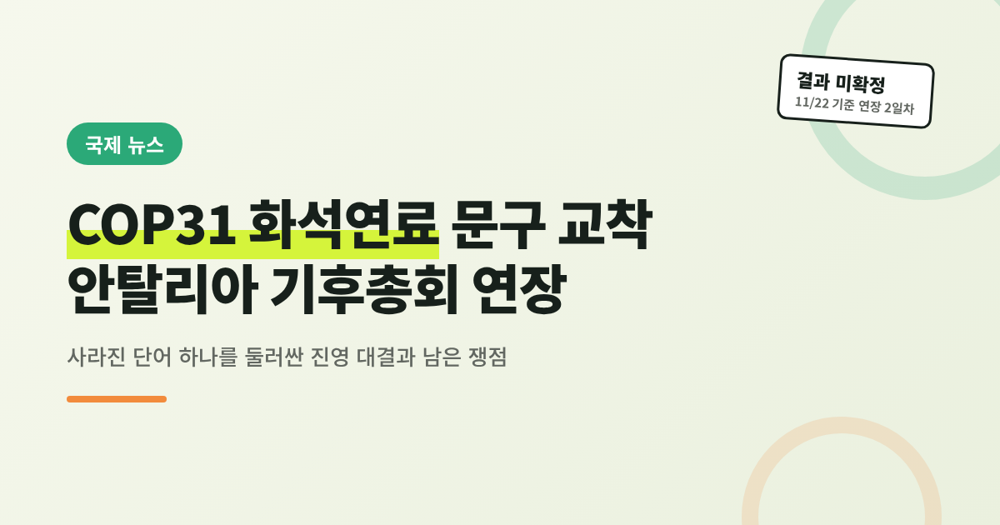
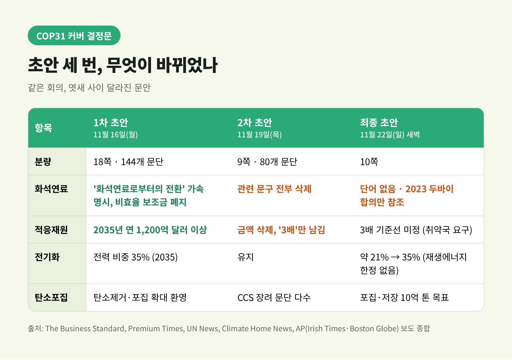
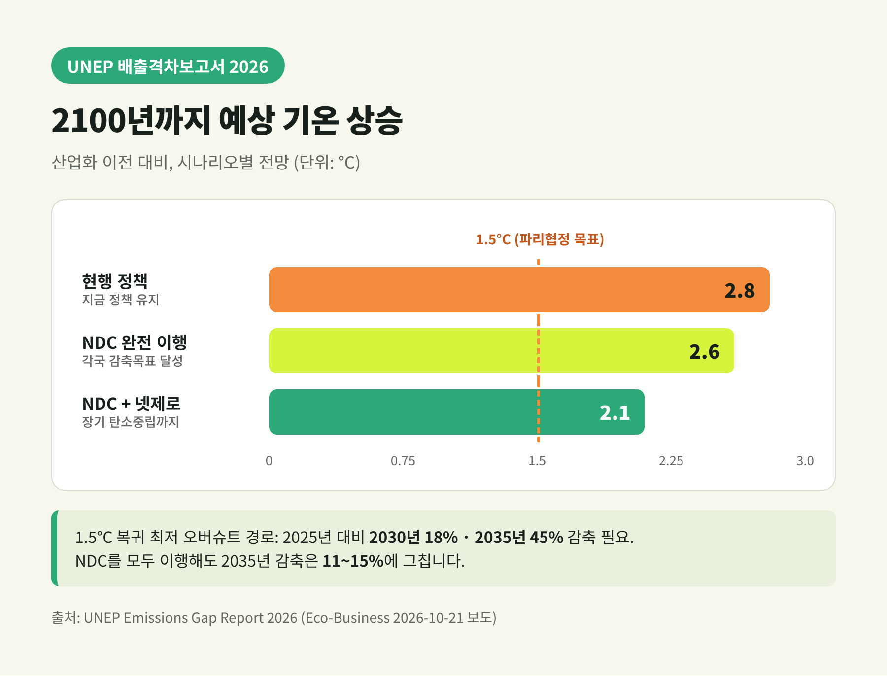
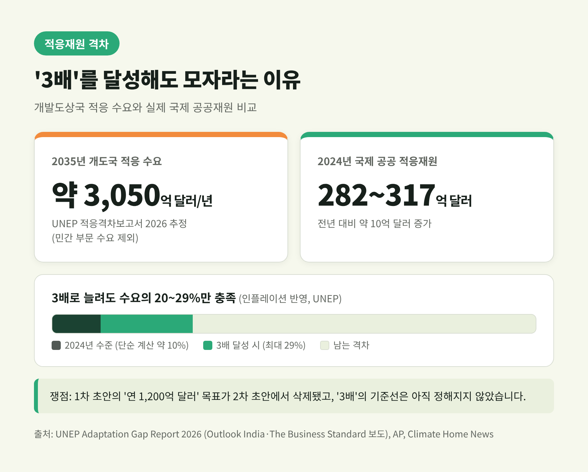
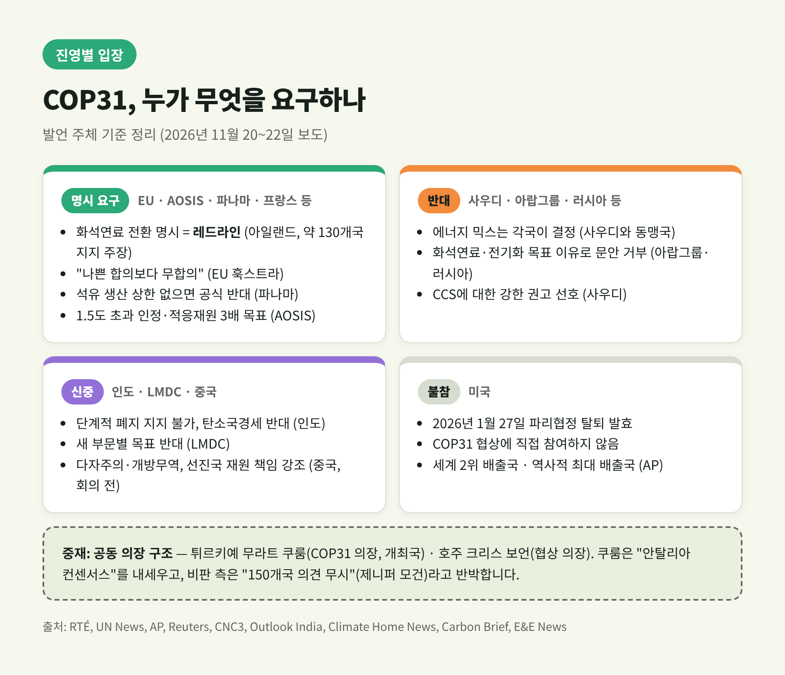
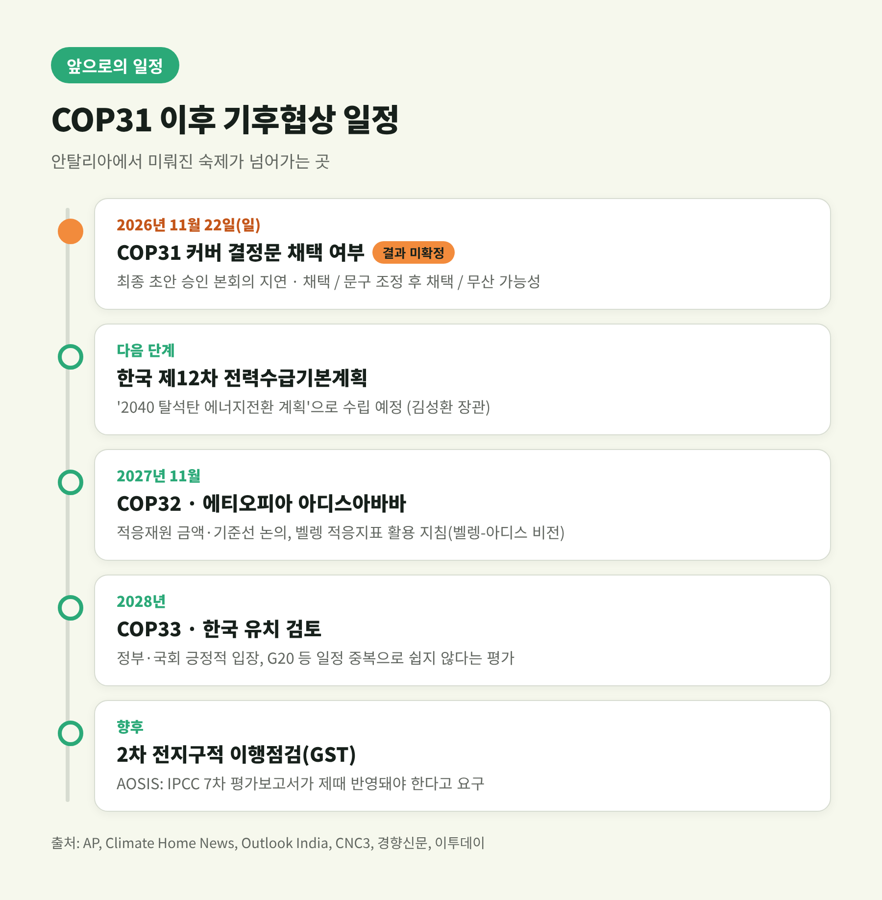

COP31 화석연료 문구 교착, 안탈리아 기후총회가 이틀째 연장된 이유

튀르키예 안탈리아에서 열린 제31차 유엔기후변화협약 당사국총회(COP31)가 폐막일을 넘겨 이틀째 연장 협상을 이어가고 있습니다. 쟁점은 하나로 모입니다. 최종 합의문에 '화석연료'라는 단어를 넣을 것인가입니다. 이번 글에서는 무슨 일이 있었는지, 왜 이 문구 하나가 중요한지, 각국은 어떤 입장인지, 그리고 앞으로 무엇이 남았는지를 차례로 정리해 보겠습니다.
3줄 요약 - COP31은 11월 20일(금) 폐막 예정이었지만 합의에 실패해 22일(일)까지 연장됐습니다. 이 글 작성 시점(한국시간 22일 저녁)까지 최종 합의문 채택은 확인되지 않았습니다. - 1차 초안의 '화석연료 전환' 문구와 적응재원 1,200억 달러 목표가 2차 초안에서 모두 빠졌습니다. 22일 새벽 공개된 최종 초안도 화석연료를 직접 언급하지 않고 2023년 두바이 합의만 참조합니다. - EU·군소도서국·파나마 등은 명시를 요구하고, 사우디·러시아 등은 반대하며, 인도는 단계적 폐지 지지 불가 입장입니다. 미국은 파리협정 탈퇴 후 협상에 직접 참여하지 않았습니다.
■ 무슨 일이 있었나 — 초안 세 번, 사라진 단어
COP31의 공식 일정은 11월 9일부터 20일까지였습니다. 약 200개 대표단이 모였고, 결정은 관례대로 컨센서스(사실상 만장일치)로 내려야 합니다. 한 나라만 공식 반대해도 채택이 막힐 수 있는 구조입니다.
갈등은 의장단이 내놓은 '커버 결정문(총회 전체 합의문)' 초안에서 시작됐습니다. 11월 16일 공개된 1차 초안은 18쪽, 144개 문단이었습니다. 에너지 시스템에서 화석연료로부터의 전환을 앞당기자는 문구, 비효율적인 화석연료 보조금 폐지, 브라질(COP30 의장국)이 만든 화석연료 전환 로드맵 환영, 2035년까지 적응재원 연 1,200억 달러 이상 같은 내용이 담겼습니다(The Business Standard, Premium Times 보도).
사흘 뒤인 19일 2차 초안은 9쪽, 80개 문단으로 절반이 됐습니다. 화석연료 관련 문구는 모두 사라졌고, 1,200억 달러라는 숫자도 빠졌습니다. 대신 탄소포집(CCS)을 장려하는 문단이 여러 개 들어갔습니다(UN News, Climate Home News).
폐막 예정일인 20일, 파리협정 제6조(탄소시장 협력) 등 일부 결정은 채택됐지만 커버 결정문은 합의되지 않았습니다(Hürriyet Daily News). 21일 늦은 밤 무라트 쿠룸 의장은 본회의에서 "모든 당사국이 동의할 수 있는 문안을 내놓았다고 믿는다"고 밝혔습니다(Reuters). 최종 초안은 22일 새벽 3시(현지시간) 공개됐습니다.
AP 통신에 따르면 10쪽짜리 이 문안에는 'fossil(화석)', 'oil(석유)', 'coal(석탄)', 'phase-out(단계적 폐지)'이라는 단어가 한 번도 나오지 않습니다. 대신 2023년 두바이 COP28 합의, 즉 "에너지 시스템에서 화석연료로부터의 전환"을 참조하는 방식을 택했습니다. 쿠룸 의장과 튀르키예 관영 아나돌루 통신은 같은 문안을 두고 "화석연료 우려를 반영했다"고 설명합니다. 같은 문안이 '반영'으로도, '누락'으로도 읽히는 셈입니다.

공식 폐막 시한을 약 40시간 넘긴 시점이었습니다(AP). Reuters는 22일 오전(세계표준시 9시 기준) 막판 셔틀외교로 승인 본회의가 거듭 지연되고 있다고 전했습니다. 쿠룸 의장은 "대다수의 컨센서스가 보인다, 타협이 가시권에 있다"고 했지만, 일부 대표단은 합의 없이 떠날 가능성을 거론했습니다. 주최 측은 귀국하는 대표단이 늘어 의결할 인원이 모자랄 수 있다는 걱정까지 하고 있습니다(AP).
이 글을 쓰는 시점까지 최종 합의문 채택 여부는 확인되지 않았습니다. 아래 내용 중 '최종 결과'에 해당하는 부분은 모두 미확정입니다.
■ 왜 중요한가 — 단어 하나가 상징하는 10년
화석연료라는 단어가 왜 이렇게까지 문제일까요.
예전엔 이 단어가 COP 최종 결정문에 들어가는 것 자체가 불가능에 가까웠습니다. 기후 싱크탱크 E3G의 앨든 마이어는 두바이 이전 25년 넘게 COP 최종 결정에 화석연료가 언급되지 않았고, 사우디아라비아가 그 주된 이유였다고 설명합니다(AP). 2023년 두바이에서야 처음으로 '화석연료로부터의 전환'이 명문화됐습니다. 구속력 있는 시간표는 없었습니다.
지금은 그 문구를 지키느냐, 다시 빼느냐의 싸움이 됐습니다. 마이어는 아무 신호 없이 회의가 끝나면 "실질적인 후퇴"가 될 것이라고 평가했습니다.
배경에는 더 무거운 숫자가 있습니다. 유엔환경계획(UNEP)이 10월 발표한 배출격차보고서 2026에 따르면, 현행 정책대로라면 2100년까지 2.8도, 각국이 제출한 국가온실가스감축목표(NDC)를 모두 지켜도 2.6도 상승이 예상됩니다. 1.5도로 되돌아오는 가장 낮은 '초과(오버슈트)' 경로조차 2025년 대비 2030년 18%, 2035년 45% 감축을 요구합니다. NDC를 다 이행해도 2035년 감축 폭은 11~15%에 그칩니다(Eco-Business 보도).

Reuters는 이번 회의가 유엔이 1.5도 초과를 사실상 확인한 뒤 처음 열린 COP라고 짚었습니다. 최종 초안이 처음으로 1.5도 초과 경로를 인정하면서도, 그 원인인 화석연료는 이름을 부르지 않는 구조인 것입니다. 비판하는 쪽이 문제 삼는 지점이 바로 이 간극입니다.
■ 쟁점 ① 탄소포집과 전기화 — '대안'인가 '면죄부'인가
화석연료 문구가 빠진 자리에는 두 가지가 들어왔습니다.
첫째는 탄소 포집·활용·저장(CCS)입니다. 최종 초안은 10억 톤 규모의 탄소 포집·저장 목표를 제시했습니다(AP). EU는 시멘트처럼 감축이 어려운 산업에서 CCS가 필요하다는 점은 받아들이지만, 화석연료 채굴을 연장하는 명분이 될 수 있다고 우려합니다(RTÉ). 우간다의 밥 나티푸 기후변화 담당관은 CCUS가 선진국이 석유·가스 생산을 이어가는 근거가 된다고 비판했습니다(Premium Times). 반면 Reuters는 익명 관계자를 인용해 사우디 등 산유국이 화석연료를 빼고 탄소제거를 넣는 방향을 밀었다고 보도했고, 사우디 대표단은 논평을 거부했습니다.
둘째는 전기화입니다. 최종에너지 소비에서 전력이 차지하는 비중을 현재 약 21%에서 2035년 35%로 높이자는 튀르키예의 목표가 문안에 남았습니다(AP). 75개국과 94개 기관이 이 목표를 지지했습니다(Hürriyet). 쿠룸 의장은 전기화 자체가 화석연료에서 멀어지는 것을 뜻한다고 주장합니다. 하지만 재생에너지로 만든 전기여야 한다는 조건은 없습니다. 기후분석기관 클라이밋 애널리틱스의 빌 헤어는 "석탄과 가스로 돌리는 전기화는 온난화를 막지 못한다"고 지적했습니다.
■ 쟁점 ② 적응재원 — '3배'에는 기준선이 없다
재원 문제는 화석연료만큼이나 첨예합니다.
2024년 바쿠 COP29에서 합의된 신규 기후재원 목표(NCQG)는 선진국 주도로 2035년까지 연 3,000억 달러, 모든 재원을 합쳐 연 1조 3,000억 달러를 조성한다는 내용입니다(WRI). 2025년 벨렝 COP30은 국제 공공 적응재원을 2035년까지 3배로 늘린다는 '열망'을 내놓았습니다.
문제는 출발점입니다. UNEP에 따르면 개발도상국의 적응 수요는 2035년 연 약 3,050억 달러인데, 2024년 국제 공공 적응재원은 282억~317억 달러였습니다. 3배를 달성해도 수요의 20~29%만 채운다는 계산입니다(Outlook India). 게다가 무엇의 3배인지, 즉 기준선이 정해진 적이 없습니다(AP). 1차 초안의 1,200억 달러가 빠지고 2차 초안에서 금액 결정이 COP32로 넘어간 것이 개도국의 반발을 산 이유입니다(Climate Home News).

사탓 삼파다 기후재단의 하르지트 싱은 "부자 나라들은 현금 대신 대화를 제안하고 있다"고 꼬집었습니다(AP). 요르단은 이미 약속된 재원에 대한 접근 절차를 간소화하라고 요구했고, EU는 이 부분에선 타협할 여지가 있다는 보도가 나왔습니다(RTÉ). 적응 진척을 재는 59개 '벨렝 적응 지표'는 COP30에서 채택됐지만, 방법론을 다듬을 기술 태스크포스 구성은 지난 6월 본(Bonn) 회의에서 합의되지 못했습니다(Outlook India). COP31에서 이 부분이 어떻게 정리됐는지는 아직 확인되지 않았습니다.
■ 쟁점 ③ 진영별 입장 — 누가 무엇을 원하나
입장은 크게 네 갈래로 나뉩니다. 발언 주체와 함께 정리합니다.
명시 요구 진영(EU·군소도서국·중남미·아프리카 일부) - EU 웝커 훅스트라 기후담당 집행위원은 "아직 타협은 없다", "나쁜 합의보다 무합의가 낫다"고 말했습니다(RTÉ). - 아일랜드 다라 오브라이언 장관은 화석연료 전환 인정을 '레드라인'으로 규정하고, 약 130개국이 EU 입장을 지지한다고 밝혔습니다(RTÉ). - 프랑스·파나마가 주도하고 벨기에·스페인·스웨덴·바누아투 등이 참여한 그룹은 "질서 있는 화석연료 전환의 명시적 인정"을 포함한 6대 우선순위를 내놓았습니다(UN News). - 파나마 후안 카를로스 나바로 환경장관은 석유 생산 상한, 목표 실패 인정, 적응재원 강화가 없으면 공식 반대하겠다며, 협상이 "석유 마피아"의 인질이 됐다고 비판했습니다(AP). - 군소도서국연합(AOSIS)은 1.5도 초과의 명시적 인정, 화석연료 명시, 적응재원 3배의 구체 목표를 요구했습니다(CNC3). 투발루의 마이나 탈리아 기후장관은 "사우디와 협상하는 것 같다"고 했습니다(Reuters).
반대·신중 진영(산유국) - 사우디와 동맹국은 각국이 에너지 믹스를 스스로 결정해야 한다며 화석연료 문구에 반대해 왔습니다(RTÉ). - 아랍그룹과 러시아는 화석연료와 전기화 목표를 이유로 커버 문안을 거부한 것으로 보도됐습니다(Climate Home News). 베네수엘라도 화석연료의 지속적 역할을 주장했습니다(Premium Times).
개도국 대국(인도·중국) - 인도 부펜데르 야다브 환경장관은 에너지 수요를 이유로 화석연료 단계적 폐지를 지지할 수 없다고 했고, EU 탄소국경세에도 반대했습니다. 인도가 속한 동지개도국그룹(LMDC)은 커버 결정문에 새 부문별 목표를 넣는 데 반대합니다(Outlook India). - 중국 리가오 생태환경부 부부장은 회의 전 "다자주의 수호"와 개방적 무역체제를 강조하며, 선진국의 감축·재원 지원 부족을 지적했습니다(Carbon Brief). 회의 막바지 중국의 구체적 입장은 확인된 보도가 없습니다.
빈자리(미국) - 미국은 2026년 1월 27일 파리협정 탈퇴가 발효됐고(E&E News), 이번 협상에 직접 참여하지 않았습니다(AP). AP는 미국을 중국에 이은 세계 2위 배출국이자 역사적 최대 배출국으로 소개합니다.

중재자의 위치도 독특합니다. COP31은 개최국 튀르키예의 쿠룸 장관이 의장을, 호주의 크리스 보언 장관이 '협상 의장'을 맡은 이례적 구조입니다(UNFCCC). 두 나라가 모두 개최를 신청했다가 2025년 벨렝에서 이렇게 타협했습니다(Wikipedia). Reuters는 호주의 과제를 기후 취약국과 화석연료 생산·소비 의존국 사이의 균형 잡기로 요약했습니다. 보언 장관은 "해볼 가치가 있는 일은 쉽게 오지 않는다"며 합의 의지를 보였습니다(Premium Times).
평가는 엇갈립니다. 쿠룸 의장은 "안탈리아 컨센서스"를 말합니다(Anadolu). 반면 전 독일 기후특사 제니퍼 모건은 "의장단이 150개국의 의견을 무시하고 매우 약한 문안을 냈다"고 했고(Reuters), 시민사회 단체 100곳은 공동의장단에 "유엔 역사상 가장 실망스러운 COP 중 하나"가 될 수 있다고 경고했습니다(Al Jazeera). 한편 기후분석가 빌 헤어는 사우디가 압도적인 국제 여론에 끝까지 맞서지는 않을 것이라는 전망도 내놓았습니다(Outlook India).
■ 한국에는 어떤 의미인가
한국 정부는 이번 회의에서 '이행'을 강조했습니다.
김성환 기후에너지환경부 장관은 11월 17일 고위급회의 국가발언에서 파리협정 10주년을 맞아 감축 약속을 실제 정책으로 옮겨야 한다고 밝히고, 한국형 녹색대전환(K-GX)의 국제 확대와 '지구적 기후대화'를 제안했습니다. 같은 날 한국과 호주는 전기화·전력망·청정에너지 공급망·산업 탈탄소 협력 양해각서를 맺었습니다(아주경제).
국내 숙제는 분명합니다. 한국의 2035 NDC는 2018년 대비 53~61% 감축으로, 2025년 11월 확정됐습니다(뉴시스). 김 장관은 안탈리아 현지에서 제12차 전력수급기본계획을 '2040 탈석탄 에너지전환 계획'으로 만들겠다고 했습니다. 석탄화력 60기 중 10기는 비상용 안보 전원으로 남기는 구상이고, 지난해 석탄은 전체 발전량의 28.7%였습니다(경향신문). 반도체·AI 데이터센터 등으로 전력 수요가 늘어나는 상황에서 김 장관 스스로도 이를 "만만치 않은 숙제"라고 표현했습니다.
국제 합의문에 화석연료가 명시되든 간접 참조에 그치든, 전기화 35% 같은 목표는 한국의 전력 계획과 직결됩니다. AP가 미해결 쟁점으로 꼽은 EU의 탄소집약 제품 부과금(탄소국경세) 역시 수출 비중이 큰 한국 산업과 무관하지 않습니다. 국회 대표단의 이종배·안호영 의원은 2028년 COP33 한국 유치에 긍정적 입장을 밝히면서도, 같은 시기 G20 등 일정이 겹쳐 쉽지 않다고 평가했습니다(이투데이).
■ 앞으로 전망 — 남은 시나리오와 일정
지금 가능한 갈래는 세 가지로 보입니다.
- 최종 초안 그대로 채택 — 두바이 합의 참조와 전기화·CCS 목표로 마무리. 의장단은 '안탈리아 컨센서스'를, 비판 진영은 후퇴를 말하게 됩니다.
- 막판 문구 조정 후 채택 — 파나마·EU 요구 일부가 반영되는 경우. 사우디 등의 수용 여부가 관건입니다.
- 커버 결정문 무산 — 파나마 등이 공식 반대하거나 정족수가 부족한 경우. 이미 채택된 개별 결정만 남게 됩니다.
어느 쪽이 될지는 아직 알 수 없습니다. 분명한 것은 미뤄진 숙제가 많다는 점입니다.

- COP32: 2027년 11월 에티오피아 아디스아바바(AP). 적응재원 금액·기준선, 적응지표 활용 지침이 이곳으로 넘어가 있습니다.
- 2차 전지구적 이행점검(GST): AOSIS는 IPCC 7차 보고서가 제때 반영돼야 한다고 요구합니다.
- 한국: 제12차 전기본에 2040 탈석탄 경로가 어떻게 담길지가 다음 시험대입니다.
정리하면 이렇습니다. COP31의 교착은 단어 하나를 둘러싼 말싸움처럼 보이지만, 실제로는 '두바이에서 처음 쓴 약속을 지킬 것인가'를 묻는 싸움입니다. 의장단은 전기화와 탄소포집으로 현실적인 길을 찾았다고 말하고, 반대편은 원인을 부르지 않는 처방이라고 반박합니다. 어느 쪽 말이 맞는지는 문안보다 이후 각국의 이행이 판가름할 것입니다.
"합의문의 단어보다 무거운 것은, 그 단어를 지킬 의지입니다."
안탈리아의 마지막 의사봉이 어떤 문장을 남기든, 아디스아바바까지 남은 1년이 더 중요하다고 생각합니다.
참고자료
- UN News, "COP31: Countries demand stronger climate deal amid deadlock in Antalya" (2026-11-20) — https://news.un.org/en/story/2026/11/1168845
- Al Jazeera, "COP31 climate talks on the brink as new draft deal faces scrutiny" (2026-11-22) — https://www.aljazeera.com/news/2026/11/22/fossil-fuel-impasse-pushes-cop31-climate-talks-into-second-day-of-overtime
- The Spokesman-Review(Reuters), "COP31 climate talks close to final deal, says summit president" (2026-11-21) — https://www.spokesman.com/stories/2026/nov/21/cop31-climate-talks-close-to-final-deal-says-summi/
- ThePrint(Reuters), "COP31 climate deal hangs in the balance as time runs out" (2026-11-22) — https://theprint.in/world/cop31-climate-deal-hangs-in-the-balance-as-time-runs-out/3105690/
- The Irish Times(AP), "Cop31 deal in jeopardy as latest draft omits fossil fuels" (2026-11-22) — https://www.irishtimes.com/environment/2026/11/22/cop31-deal-in-jeopardy-as-latest-draft-omits-fossil-fuels/
- The Boston Globe(AP), "Turkey's final draft at UN climate talks doesn't mention the fossil fuels" (2026-11-22) — https://www.bostonglobe.com/2026/11/22/world/turkey-un-climate-fossil-fuels-global-warming/
- PBS NewsHour(AP), "Activists, leaders criticize COP31 climate talks as fossil fuels go unmentioned in draft deal" (2026-11-20) — https://www.pbs.org/newshour/world/activists-leaders-criticize-cop31-climate-talks-as-fossil-fuels-go-unmentioned-in-draft-deal
- Anadolu(anews), "Head of COP31 says gap narrowing on final text" (2026-11-22) — https://www.anews.com.tr/turkey/2026/11/22/head-of-cop31-un-climate-change-conference-says-gap-narrowing-on-final-text
- MyJoyOnline, "COP31: New climate deal emerges after overnight negotiations in Turkey" (2026-11-22) — https://www.myjoyonline.com/cop31-new-climate-deal-emerges-after-overnight-negotiations-in-turkey/
- RTÉ, "EU climate envoy says 'no compromise yet' on COP31 deal" (2026-11-21) — https://www.rte.ie/news/environment/2026/1121/1600094-cop31-turkey/
- Outlook India, "COP31 Stalls: Saudi Showdown Over Fossil Fuel Phase-Out" (2026-11-22) — https://www.outlookindia.com/international/cop31-antalya-climate-talks-stall-saudi-arabia-fossil-fuel-phase-out-showdown-india-position-cover-decision
- Premium Times, "COP31 climate talks spill into overtime as nations quarrel over fossil fuels" (2026-11-21) — https://www.premiumtimesng.com/news/headlines/926870-cop31-climate-talks-spill-into-overtime-as-nations-quarrel-over-fossil-fuels.html
- Climate Home News, "COP31 Bulletin Day 10" (2026-11-19) — https://www.climatechangenews.com/2026/11/19/cop31-antalya-turkiye-australia-ministers-agremeent-fossil-fuels-electrification/
- The Business Standard, "COP31 draft calls for fossil fuel phaseout, at least $120b in adaptation finance" (2026-11-16) — https://www.tbsnews.net/economy/cop31-draft-calls-fossil-fuel-phaseout-least-120bn-adaptation-finance-1604866
- CNC3, "AOSIS warns COP31 will fail without stronger climate commitments" (2026-11-20) — https://www3.cnc3.co.tt/aosis-warns-cop31-will-fail-without-stronger-climate-commitments/
- Hürriyet Daily News, "COP31 talks extended as countries seek final deal" (2026-11-21) — https://www.hurriyetdailynews.com/cop31-concludes-in-antalya-after-two-weeks-of-climate-talks-229651
- UNFCCC, COP31 공식 페이지 — https://unfccc.int/cop31
- Carbon Brief, "Experts: What China wants from the COP31 climate talks" (2026-10-29) — https://www.carbonbrief.org/experts-what-china-wants-from-the-cop31-climate-talks
- Eco-Business, "Countries' climate plans point to 2.6°C as 1.5°C limit set to be breached: UN" (2026-10-21) — https://www.eco-business.com/news/countries-climate-plans-point-to-26c-as-15c-limit-set-to-be-breached-un/
- Outlook India, "COP31 And The 59 Belém Climate Adaptation Indicators" (2026-11-09) — https://www.outlookindia.com/international/cop31-2026-59-belem-climate-adaptation-indicators-cop30-global-goal-adaptation-finance-gap
- WRI, "NCQG climate finance goals explained" — https://www.wri.org/insights/ncqg-climate-finance-goals-explained
- E&E News, "So long, Paris: US officially leaves landmark climate pact" (2026-01-27) — https://www.eenews.net/articles/so-long-paris-us-officially-leaves-landmark-climate-pact/
- 경향신문, "[COP31 현장에서] 김성환 기후부 장관 '12차 전기본, 일명 2040 탈석탄 계획으로 만들겠다'" (2026-11-17) — https://www.khan.co.kr/article/202611171200011/
- 아주경제, "김성환 장관, COP31서 기후목표 이행 촉구…녹색대전환 국제협력 확대" (2026-11-17) — https://www.ajunews.com/view/20261117154644521
- 이투데이, "이종배·안호영 '파리협정 10년, 이행은 부족…COP33 한국 유치 의미'" (2026-11-22) — https://www.etoday.co.kr/news/view/2651243
- 뉴시스, "2035년 온실가스 감축 목표 '53~61%' 확정" (2025-11-10) — https://www.newsis.com/view/NISX20251110_0003397350
- Wikipedia, "2026 United Nations Climate Change Conference"(보조) — https://en.wikipedia.org/wiki/2026_United_Nations_Climate_Change_Conference